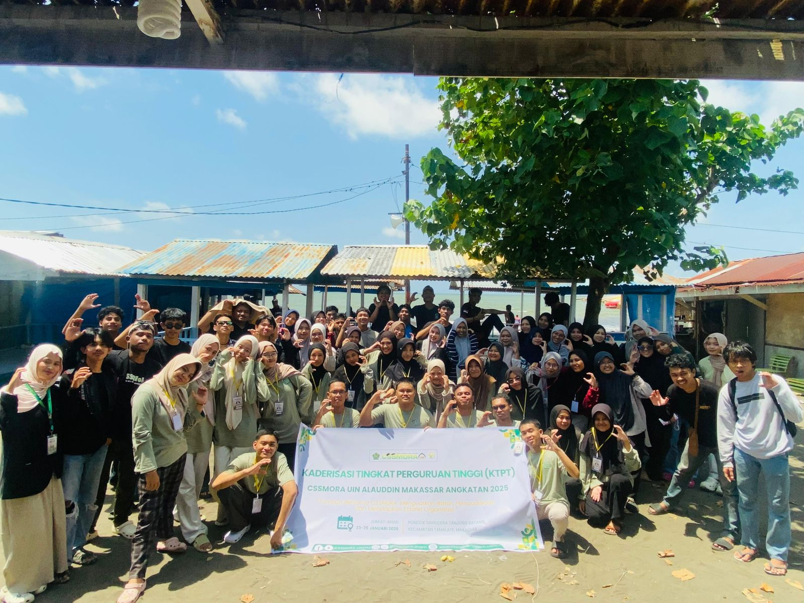

KTPT
28 januari 2026
Menyiapkan Estafet dan Menguatkan Ikatan dalam KTPT Angkatan 2025
Sumber: CSSMoRA UIN ALAUDDIN MAKASSAR
Selengkapnya →
Berita terbaru seputar kegiatan, prestasi, dan kabar penting alumni CSSMoRA.

28 januari 2026
Menyiapkan Estafet dan Menguatkan Ikatan dalam KTPT Angkatan 2025
Sumber: CSSMoRA UIN ALAUDDIN MAKASSAR
Selengkapnya →